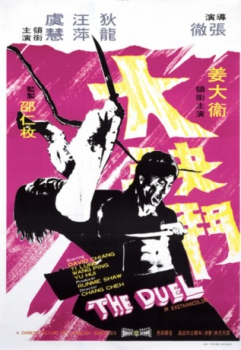

Also known as:大決鬥 (original title)
Country:ZH, 103 minutes
Spoken languages:Mandarin
Genres:Action
Director(s):Chang Cheh
Writer(s):Chiu Kang-Chien
Video Codec:Unknown
Number: 15


Certification:
Storyline:
Tan Jen-chieh’s life spins out of control when he’s forced into exile to clear his name following the murder of his adopted father. He’s hunted in the streets. His lover, Butterfly, turns to prostitution. And his father’s likely killer – a smooth operator known as the Rambler – is always lingering nearby. But before Tan and the Rambler can slit each other’s throats, they learn they’ve been double-crossed and go two against everyone in a rage of double-edged vengeance.
Cast:


Medium: Original DVD,
Comments: Part of: Martial Arts Collection ft. Brandon Lee - Fighting Ace
Loaned: No
Aspect ratio: Unknown